模型1
制度口径模型
规则变化如何影响判据在套用任何历史判据前，先确认交易规则、保证金与统计口径是否发生断裂式变化。
1933 年《证券交易法》限制卖空、提高保证金、禁止洗售，直接改变了成交量结构与波动节奏。历史阻力位仍然有效，因为成本记忆存在；但量能阈值必须重算，因为同样的成交额在新规则下代表的参与度不同。判据的「形」可迁移，「数」须重标。
原书锚点：制度改变节奏但不改变供求法则（第1章·全新的华尔街交易规则）
新政后结构变化 · 规则更新｜规则变，供求法则不变
五项资质 · 牛熊周期｜先有纪律，再有历史感
道氏理论的局限 · 个股判读｜指数确认滞后，须回到个股
三图分工 · 三点确认 · 七原则｜判据越简单，执行越可靠
在套用任何历史判据前，先确认交易规则、保证金与统计口径是否发生断裂式变化。
1933 年《证券交易法》限制卖空、提高保证金、禁止洗售，直接改变了成交量结构与波动节奏。历史阻力位仍然有效，因为成本记忆存在；但量能阈值必须重算，因为同样的成交额在新规则下代表的参与度不同。判据的「形」可迁移，「数」须重标。
月线定方向、周线定波段、日线定时机，三级不得越权。
不同尺度记录不同量级的供求。月线滤掉日内噪音，保留大资金痕迹；周线给出波段与止损基准；日线只在活跃时提供入场时机。用日线推翻月线，等于用噪音否定信号。
突破或跌破须超过前高前低三个点才算确认；确认后回抽跌破前高下方三点则失效。
关键价位聚集大量止损单，价格常短暂假突破以触发它们。三点缓冲带把「触及」与「站稳」分开；同时给出精确挂单位置，把风险限定在六点内。解读版补充：该阈值应按股价百分比调整，高价股用三点会过窄。
历史顶底聚集解套盘与抄底盘，构成天然支撑阻力；在其上叠加三个点缓冲带，用于区分突破与假突破。
历史顶底是全部参与者的成本记忆点。价格回到该位置时，当初在此买入被套者急于解套，当初在此卖出踏空者急于回补，两股力量同时出现，形成剧烈博弈。突破意味着其中一方彻底胜出，因此后续往往加速。
以七条原则覆盖资金、止损、买卖点、加仓、反手与量能验证，形成可复现的执行闭环。
七条的设计逻辑是「先定风险，再定方向，最后定节奏」。资金与止损固定风险上限；买卖点绑定形态与三点突破；加仓按价格区间调整间隔；反手处理趋势反转；量能提供独立验证。缺任一条，其余都会在执行环节被情绪击穿。
把本版与《江恩股票走势探测》逐章对照，标出章目差异与译法差异。
为 5 只标的标出上一次牛熊的顶底与三点缓冲带，回测其有效性。
按三图与三点判据执行 5 笔交易，记录三日浮亏法则的触发情况。
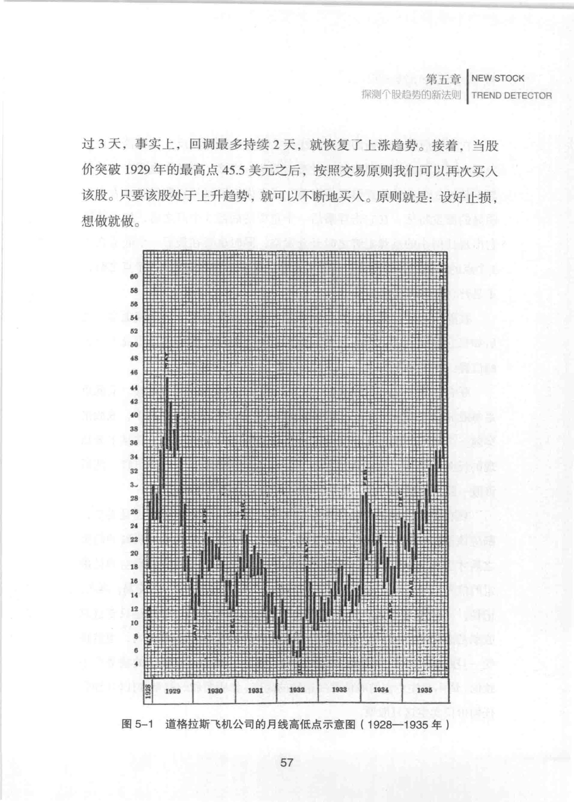
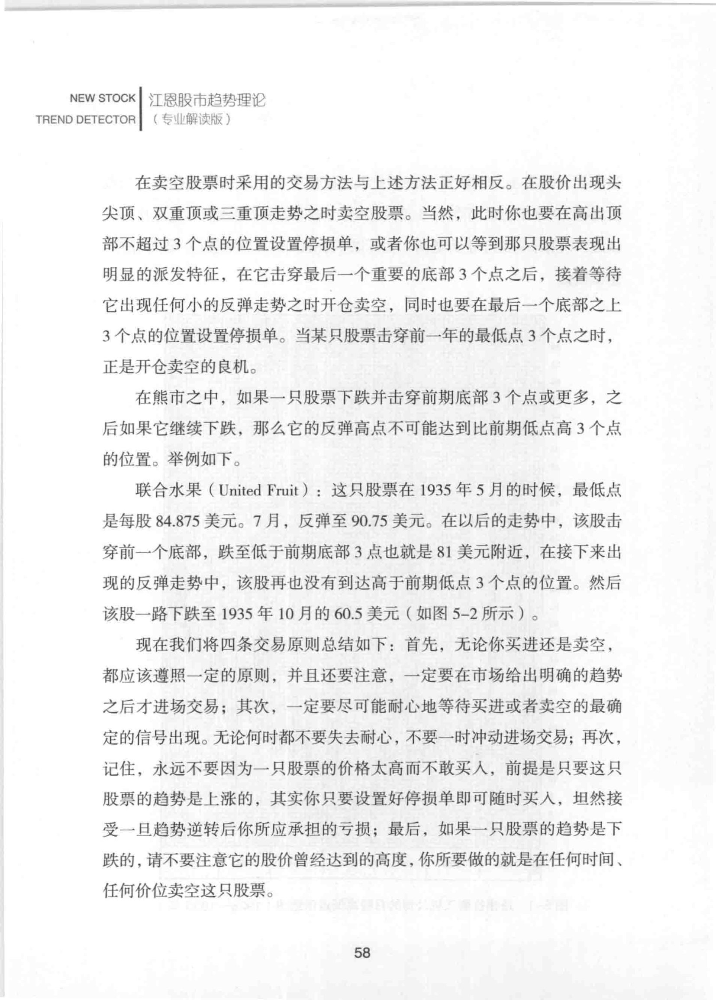
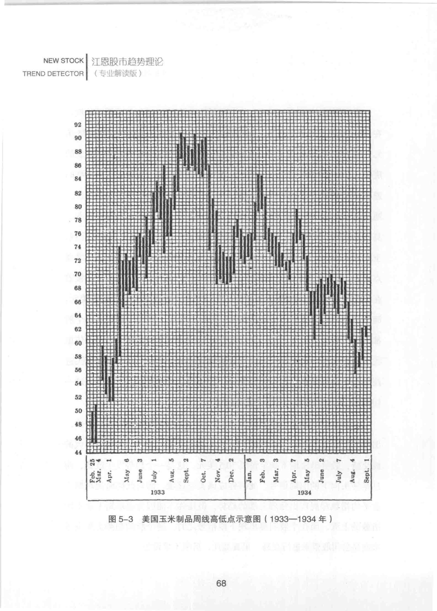
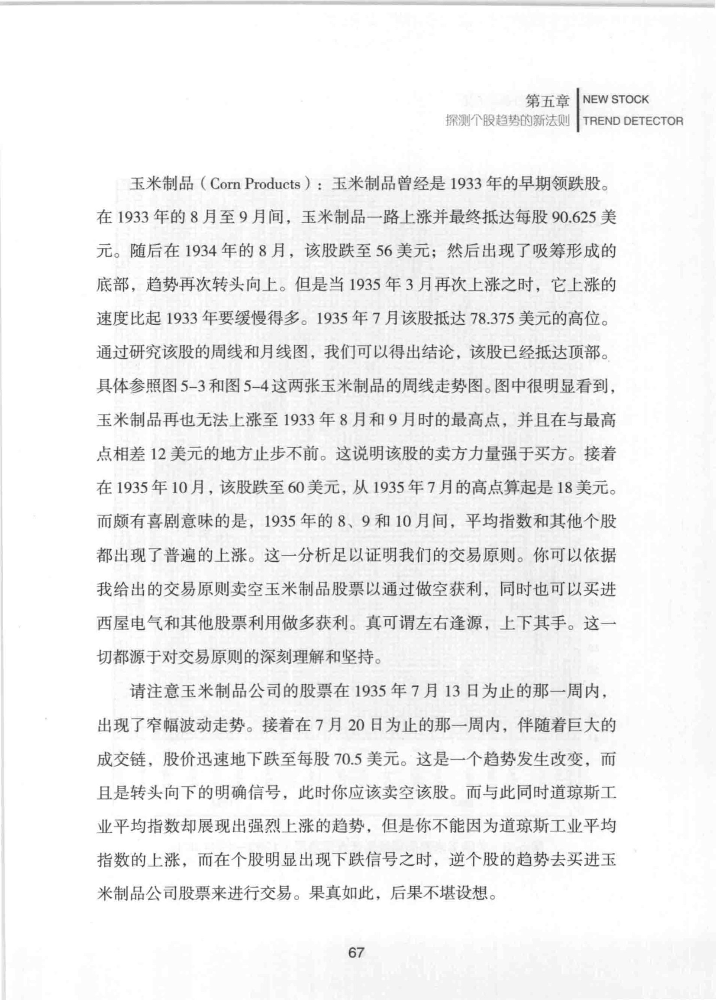
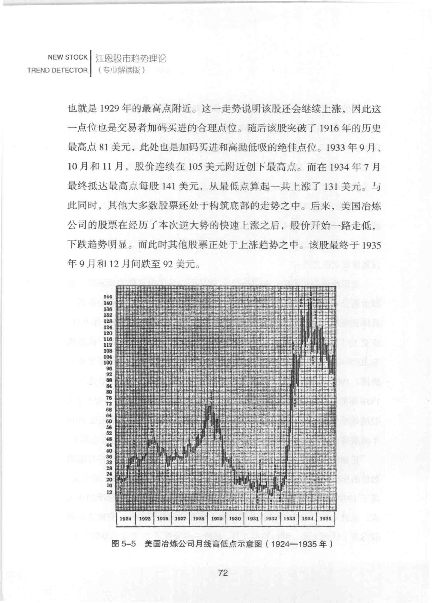
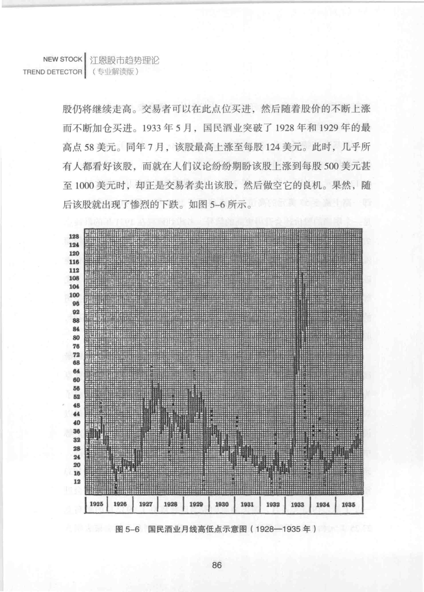
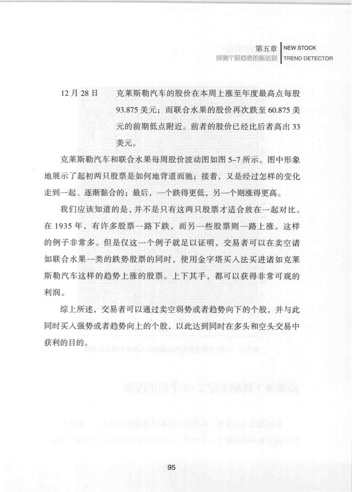
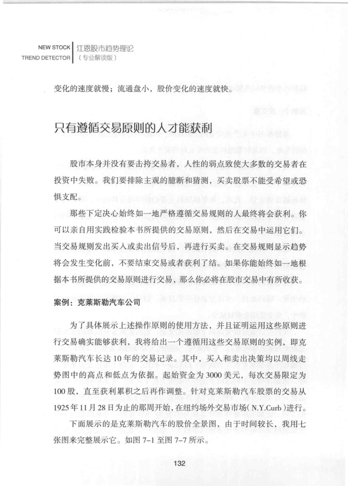
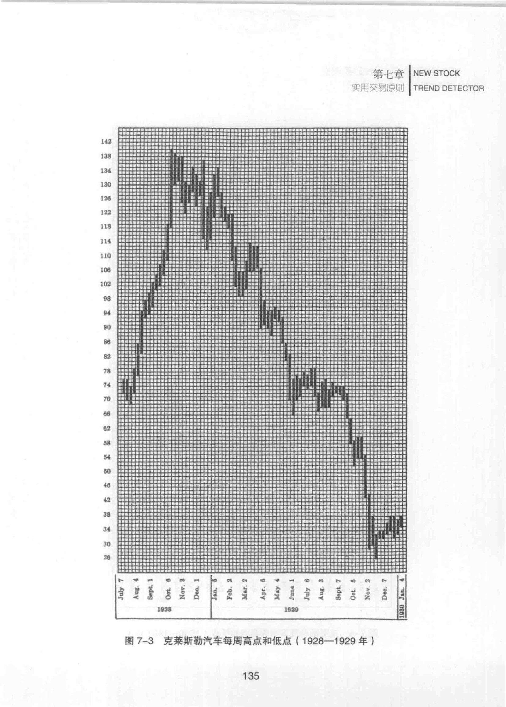
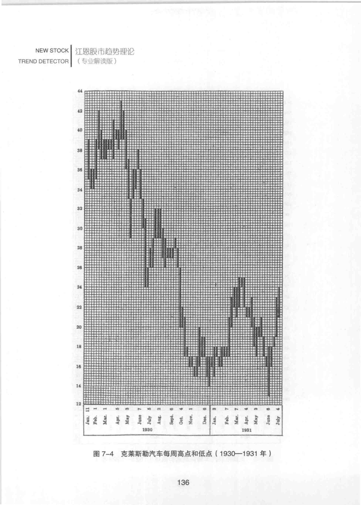

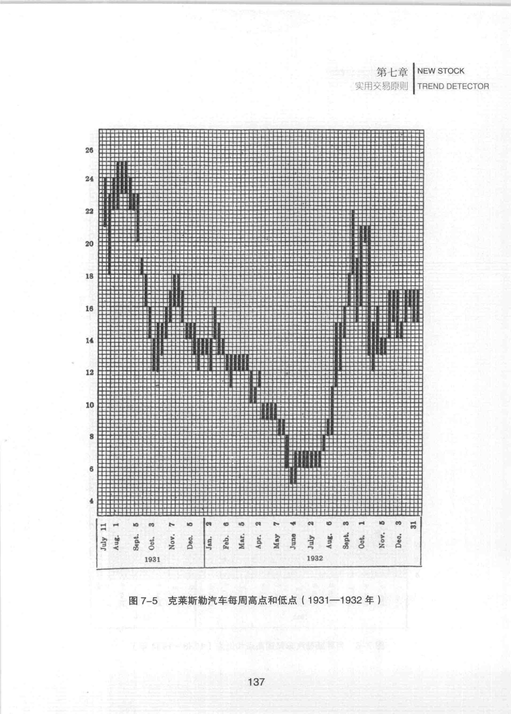
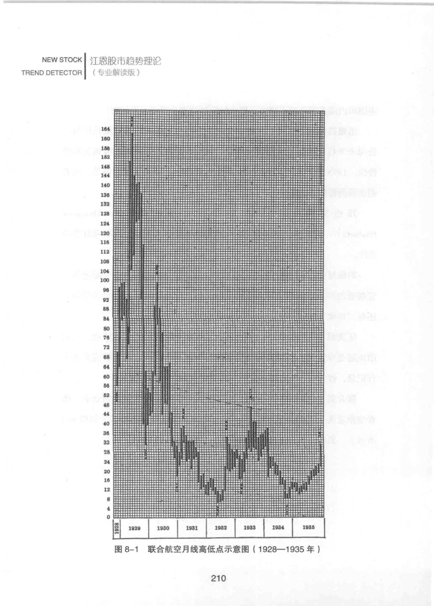